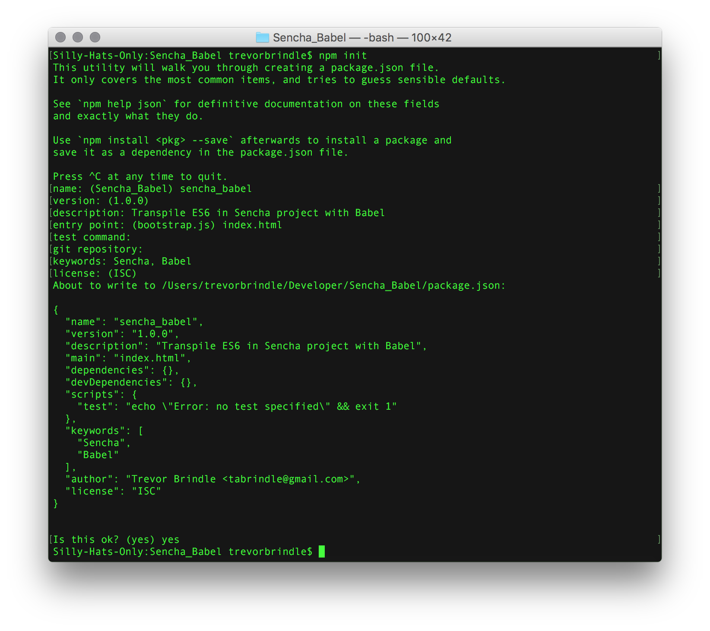
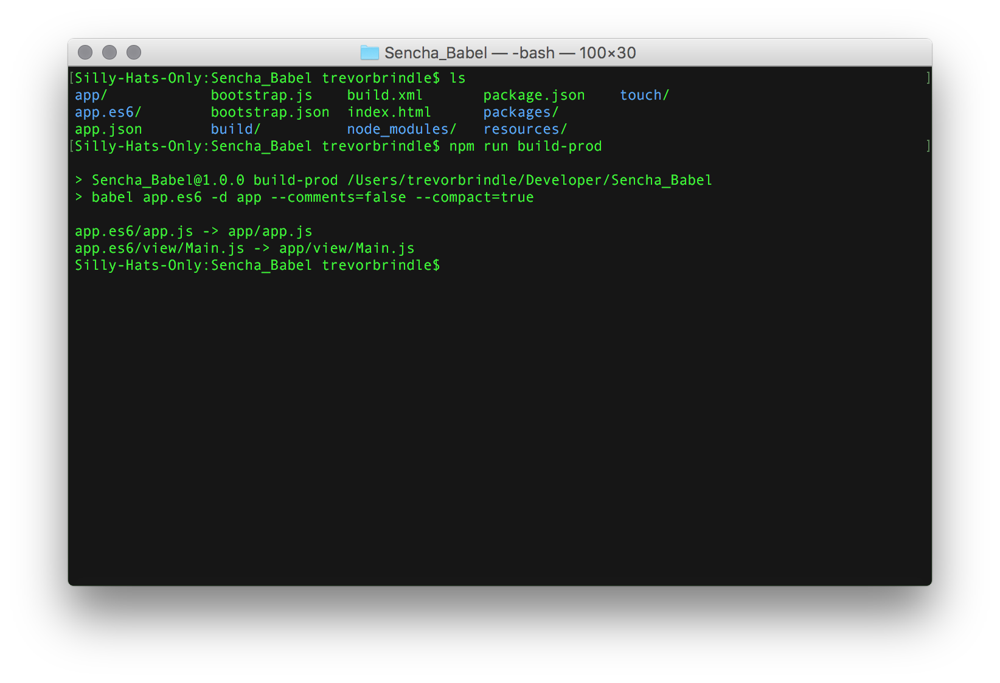

Trevor Brindle


If you have stuck with Sencha Touch or ExtJS for this long, it’s probably for a very good reason. Maybe the enterprise you work for pays for it, and that’s just what you have, or perhaps you’re just very experienced with it, and have a certain fondness for the layout of the framework: the extensible class system, the reusable view components, etc. Or, maybe you just haven’t had the time or energy to wade through the exhausting barrage of new JS frameworks that seem to appear every other day. You’d have to learn a new framework to at least close to your current proficiency and write the app in the same amount of time that you’ve budgeted. Certainly some of these are true for myself, and I am weary of being left behind by JS. It’s a powerful language and it’s going places.
ExtJS 6 was a huge update for the platform (Merging frameworks, Fashion, MVVM, etc.), but I feel it is taking it’s own (perhaps less popular) path with JS. There is no longer a free commercial license for Sencha, with exception of Sencha Touch, which is essentially dead. Sencha can call ExtJS 6 Open Source (GPLv3) all they want, but they certainly don’t act like other open source projects - there is no place for unregistered (non-paying) members to report bugs, submit pull requests, or anything else for that matter. I have ended up working directly with certain employees on many occasions, including Mitchell Simoens - a talented employee of Sencha - but this seems to be an exception rather than a rule. I certainly would have done a lot of free work for them if they had a formal outlet. But who can really blame them? Nothing in this world is truly free, and sorting bugs, and reviewing pulls requires time and money. Then again, other frameworks are making the model work.
That all being said, I have to make it work. I have applications that I support that use Sencha, and they’re not going away anytime soon. So I am doing my best to keep them modern. And by modern, I of course mean modern JS features. Among the most useful that I have longed for in Sencha in the past were arrow functions, template strings, destructuring, enhanced object literals, and new variable declarations - let and const. All of these are ECMAScript 6, also known as ECMAScript 2015 - and aren’t fully implemented in all browsers, which can be a problem, especially for mobile as a whole. There are ways to check support for features, of course, but who wants to wait? Enter Babel.
Getting Sencha Touch to work with Babel was certainly an adventure, and I would like to share, so that anyone else who wants to experiment, can do so without a huge devotion of time and resources. **Disclaimer - this is done with Sencha Cmd v6.1.3.42, and Touch 2.4.2, though I imagine this would work for ExtJS too.
The first step is creating a project the way you normally would with the following command, the way you normally would:
sencha generate app {APP_NAME} ~/{DIR}/{APP_NAME}
Then you need to initialize the NPM package.json for your project - navigate to your project folder then run npm init - this will keep track of all the packages you will be using, either in your project or for development.
npm init

Now install your NPM packages:
npm install babel-cli babel-preset-es2015 --save-dev
In order for Babel to cooperate with Sencha, and not break everything, we need to break out each individual plugin from the babel-preset-es2015 in the .babelrc and override one of the plugins config options to disallow strict mode. To create this .babelrc, paste this into your terminal:
UPDATE:
I recommend using the env preset instead of the es2015 preset:
npm install babel-preset-env --save-dev
Much easier to deal with, and does not force you to transpile things that may not need transpiled. You are, however, still at the mercy of the Rhino parser that Sencha uses during build so we need to specifically force transpile of computed properties. As browsers progress, there may be more transforms that we have to force to support the aging parser, or find a way to bypass Rhino entirely.
Babel inside of package.json now looks like this:
"babel": {
"presets": [
[
"env",
{
"targets": {
"browsers": [
"iOS >= 8",
"Chrome >=46"
]
},
"include": [
"transform-es2015-computed-properties"
],
"loose": true,
"modules": false
}
]
],
"comments": false
},
Now, add some scripts in your package.json something like this:
"scripts" : {
"build": "babel es6 -d app --comments=false --compact=true",
"watch": "babel es6 -d app --watch"
}
In order to simplify the transpilation process, we will move the app.js file into the app folder
mv app.js app
Then, change the path of app.js in app.json from "path": "app.js", to "path": "app/app.js",
Now, duplicate the app folder to our new es6 folder that will house the code to be transpiled by Babel.
ditto app es6
From here on out, make changes ONLY to your files in the es6 folder - if you forget and make some changes in the app directory, it will probably get overwritten next time you change something in es6.
Using the commands we put in “scripts” in the package.json, we can for example call npm run build-prod in terminal to transpile the contents of the es6 directory into the app directory that sencha is used to running the application from.

Try using an arrow function, or a let/const variable declaration, run npm run build-prod or npm run build-debug, then refresh your application - it should transpile and give you standard ES5 JavaScript in your app/app.js file!
If anyone has found a better way to do this, or to better integrate it with Sencha Cmd, drop me a line or a comment!